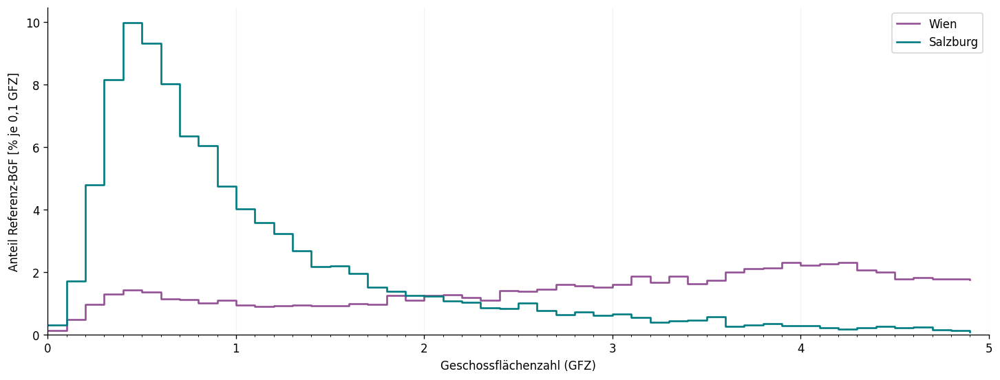
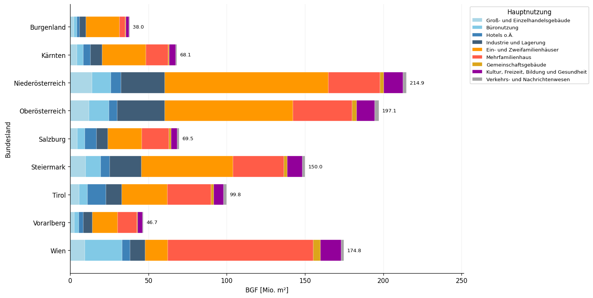
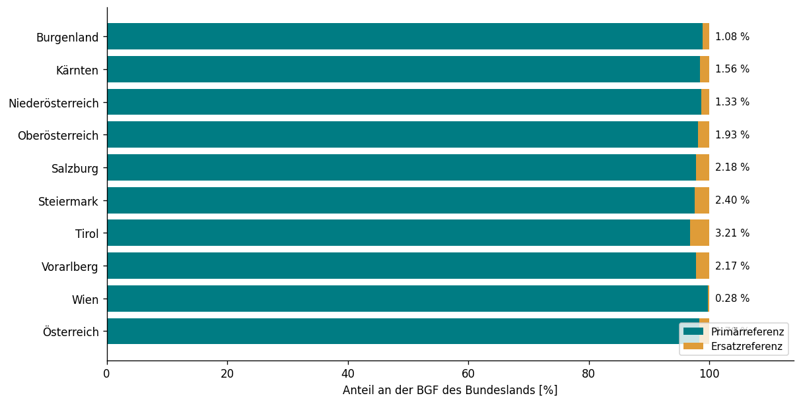
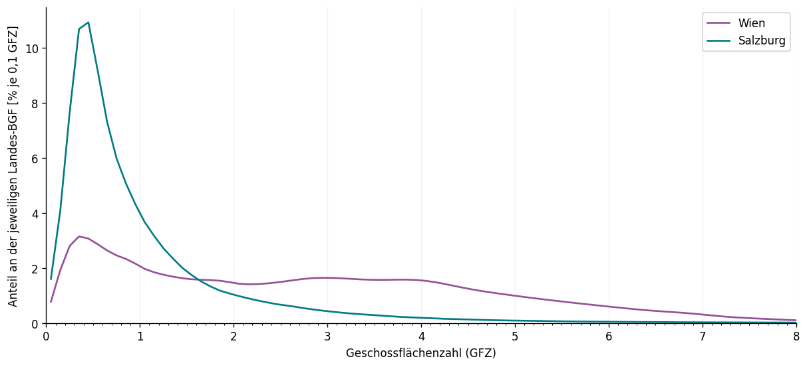

Anhang C — Ableitung der GFZ-Dichteverteilung des österreichischen Gebäudebestands 2021
Methodischer Rechenanhang – Referenzdaten, Statistik, Kerndichteschätzung und Hochrechnung
Berechnung der österreichischen GFZ-Verteilung
Dieser ausführbare Anhang dokumentiert die vollständige inhaltliche Rechenkette der GFZ-Verteilung für den österreichischen Gebäudebestand mit Statistikbezug 2021. Er ergänzt die Erläuterungen zum Kontextfaktor Dichte im Hintergrundbericht (§ „Österreichische Dichteverteilung als aktualisierte Datengrundlage“). Alle wesentlichen Modellentscheidungen und Plot-Einstellungen stehen in den Notebook-Zellen, nicht in einem externen Berechnungsskript.
Methodisches Ziel: Die statistisch erfassten Gebäudeflächen nach Bundesland, Geschossklasse und Hauptnutzung werden einer aus Einzelgebäuden abgeleiteten GFZ-Verteilung zugewiesen. Daraus ergibt sich die modellierte österreichische Bruttogrundfläche (BGF) je GFZ-Intervall von 0,1.
Abgrenzung: Es handelt sich um eine hochgerechnete Bestandsverteilung, nicht um einen Gebäudekataster für Österreich und nicht um eine Prognose für 2040. Der Anhang umfasst keine nachgelagerte Allokation der energetischen Zielwerte. Die Statistik enthält ursprünglich NGF (Nettogrundfläche); die hier verwendete BGF ist aus ihr umgerechnet.
1. Quellen, Definitionen und Modellparameter
Die Analyse verknüpft zwei unterschiedliche Datengrundlagen:
Gebäudescharfe Referenzdaten aus Wien und Salzburg (Blatt Rohdaten): Bundesland, Geschossklasse (GK), Gebäudehauptnutzung (GWR_Nutzung), Geschossflächenzahl (GFZ) und gebäudebezogene Bruttogrundfläche (BGF). Die GFZ wird in diesen Rohdaten bereits bereitgestellt; ihre vorgelagerte geometrische Herleitung wird hier nicht erneut berechnet.
Statistische Gebäudeflächen mit Bezug zum Gebäudebestand 2021 (Blatt python): österreichische Nettogrundflächen (NGF) nach neun Bundesländern, sieben Geschossklassen und neun Hauptnutzungen. Die Zeile AT dient ausschließlich der Kontrollrechnung; andere aggregierte Zeilen werden nicht zusätzlich hochgerechnet.
Die Geschossflächenzahl beschreibt das Verhältnis zwischen BGF und Grundstücksfläche eines Gebäudes bzw. einer Bezugsfläche:
Hierbei sind \(b\) das Bundesland, \(g\) die Geschossklasse und \(u\) die Hauptnutzung. Der Faktor NGF/BGF = 0,8 ist eine übernommene, für alle Gruppen gleiche Modellannahme und kein in diesem Notebook ermittelter empirischer Faktor.
Die Referenzzuordnung lautet grundsätzlich Wien → Wien, Salzburg → alle anderen Bundesländer. Pro Nutzung und Geschossklasse müssen mindestens fünf Referenzgebäude vorliegen. Falls nicht, wird die dokumentierte Ersatzregel verwendet (§ 5). Die Wahl kde bezeichnet eine flächengewichtete gaußsche Kerndichteschätzung mit Scott-Bandbreite.
Berechnung anzeigen
flowchart TB W["Einzelgebäude Wien"] --> KW["BGF-gewichtete KDE je Nutzung und Geschossklasse"] S["Einzelgebäude Salzburg"] --> KS["BGF-gewichtete KDE je Nutzung und Geschossklasse"] KW --> V["Wien"] KS --> L["Acht andere Bundesländer, jeweils separat"] T["Statistische NGF 2021 je Bundesland, Nutzung und Geschossklasse"] --> U["BGF = NGF / 0,8"] U --> V U --> L E["Bei weniger als fünf Referenzgebäuden: gekennzeichnete Ersatzregel"] -.-> V E -.-> L V --> AT["Österreich: Summe der neun BGF-Verteilungen"] L --> AT
flowchart TB
W["Einzelgebäude Wien"] --> KW["BGF-gewichtete KDE je Nutzung und Geschossklasse"]
S["Einzelgebäude Salzburg"] --> KS["BGF-gewichtete KDE je Nutzung und Geschossklasse"]
KW --> V["Wien"]
KS --> L["Acht andere Bundesländer, jeweils separat"]
T["Statistische NGF 2021 je Bundesland, Nutzung und Geschossklasse"] --> U["BGF = NGF / 0,8"]
U --> V
U --> L
E["Bei weniger als fünf Referenzgebäuden: gekennzeichnete Ersatzregel"] -.-> V
E -.-> L
V --> AT["Österreich: Summe der neun BGF-Verteilungen"]
L --> AT
Abbildung D.1: Bundeslandweise Hochrechnung der GFZ-Verteilung. Ersatzreferenzen werden je Zielkombination ausdrücklich ausgewiesen.
Berechnung anzeigen
# Modellparameter – hier zentral editierbarfrom pathlib import Pathimport hashlibimport jsonimport textwrapimport numpy as npimport pandas as pdimport matplotlib.pyplot as pltfrom matplotlib.ticker import MultipleLocatorfrom scipy.stats import gaussian_kdefrom IPython.display import displayDATA = Path("data") # ggf. an Quarto-Projektstruktur anpassenBUILDINGS = DATA /"rohdaten_python.xlsx"STATISTICS = DATA /"GFZ_Analyse_AT.xlsx"OUT = Path("outputs/recalculated")OUT.mkdir(parents=True, exist_ok=True)NGF_PER_BGF =0.8GFZ_STEP =0.1GFZ_MAX =20.0PLOT_GFZ_MAX =8.0# nur Sichtfenster, keine Kürzung der BilanzMIN_SAMPLES =5FALLBACK ="vienna"# "vienna": gekennzeichnete Ersatzregel; "error": AbbruchMETHOD ="kde"# "kde" oder zu Diagnosezwecken "histogram"PROVINCES = ["Burgenland", "Kärnten", "Niederösterreich", "Oberösterreich","Salzburg", "Steiermark", "Tirol", "Vorarlberg", "Wien"]STOREYS = ["1", "2", "3", "4", "5", "6-10", "11+"]USES = ["Hotels o.Ä.", "Büronutzung", "Groß- und Einzelhandelsgebäude","Verkehrs- und Nachrichtenwesen", "Industrie und Lagerung","Kultur, Freizeit, Bildung und Gesundheit", "Gemeinschaftsgebäude","Mehrfamilienhaus", "Ein- und Zweifamilienhäuser"]# Einheitliche Farben und Anordnung für ALLE DiagrammeCOLORS = {"Groß- und Einzelhandelsgebäude": "#abd7e7","Büronutzung": "#81c9e6","Hotels o.Ä.": "#3e82b8","Industrie und Lagerung": "#405d77","Ein- und Zweifamilienhäuser": "#ff9800","Mehrfamilienhaus": "#ff5c48","Gemeinschaftsgebäude": "#dca51b","Kultur, Freizeit, Bildung und Gesundheit": "#92009a","Verkehrs- und Nachrichtenwesen": "#a4a4a4",}PLOT_USE_ORDER =list(COLORS)plt.rcParams.update({"font.size": 10, "axes.spines.top": False,"axes.spines.right": False, "figure.dpi": 120})ifnot (0< NGF_PER_BGF <=1and MIN_SAMPLES >=2):raiseValueError("NGF/BGF bzw. Stichprobenminimum unzulässig")ifnot np.isclose(round(GFZ_MAX / GFZ_STEP) * GFZ_STEP, GFZ_MAX):raiseValueError("GFZ_MAX muss ein Vielfaches von GFZ_STEP sein")for p in (BUILDINGS, STATISTICS):ifnot p.is_file():raiseFileNotFoundError(f"Quelldatei fehlt: {p.resolve()} – Pfad in der Parameterzelle setzen")
2. Eingangsdaten und Plausibilisierung der Einzelgebäude
Die Originaldaten bleiben bei der Einlesung erhalten. Für die Verteilungsbildung werden nur Datensätze mit positiver, endlicher BGF und GFZ bis 20 berücksichtigt. Nicht zu den neun Zielgruppen gehörende Hauptnutzungen sowie nicht aus Wien oder Salzburg stammende Referenzgebäude werden ausgeschlossen. Diese Verluste werden explizit ausgewiesen.
Die beiden Unterkategorien „Mehrfamilienhaus klein“ und „Mehrfamilienhaus groß“ der gebäudescharfen Daten werden für den Vergleich mit der statistischen Klassifikation als „Mehrfamilienhaus“ zusammengefasst. Die Zuordnung wird nicht für andere unbekannte Nutzungsklassen stillschweigend ergänzt.
Die nachfolgenden Tabellen berichten Gebäudezahlen, erfasste BGF und GFZ der zwei Stichproben. Sie sind keine bundesweiten Gebäudeflächen. Die mittlere GFZ wird mit der BGF der Einzelgebäude gewichtet; dadurch entspricht sie dem Flächenbezug der späteren KDE. Die zusätzlich angegebenen Quartile sind ungewichtete Quantile der einzelnen Gebäude und dienen ausschließlich der Stichprobenbeschreibung.
fig, ax = plt.subplots(figsize=(12, 4.5), layout="constrained")raw_edges = np.arange(0, 5+ GFZ_STEP /2, GFZ_STEP)for region, color in [("Wien", "#955196"), ("Salzburg", "#007c83")]: g = samples.loc[samples.Bundesland == region] counts, _ = np.histogram(g.GFZ, bins=raw_edges, weights=g.BGF)# normiert auf die GESAMTE Referenz-BGF (einschließlich GFZ > 5) ax.step(raw_edges[:-1], 100* counts / g.BGF.sum(), where="post", linewidth=1.6, label=region, color=color)ax.set(xlim=(0, 5), ylim=(0, None), xlabel="Geschossflächenzahl (GFZ)", ylabel="Anteil Referenz-BGF [% je 0,1 GFZ]")ax.xaxis.set_major_locator(MultipleLocator(1))ax.xaxis.set_minor_locator(MultipleLocator(GFZ_STEP))ax.grid(axis="x", alpha=.15)ax.legend()fig.savefig(OUT /"gfz_referenz_rohstichproben.png", dpi=180, bbox_inches="tight")plt.show()

Abbildung D.2: BGF-gewichtete GFZ-Häufigkeit der bereinigten Referenzgebäude aus Wien und Salzburg. Das Histogramm beschreibt die Stichprobe, nicht die hochgerechnete österreichische BGF.
3. Statistische Bestandsdaten 2021: Herkunft, Flächen und Struktur
Für die nationale Hochrechnung bildet die Statistik die verbindliche Mengenbasis. Aus dem Tabellenblatt python werden die neun Bundesländer und sieben Geschossklassen mit den neun Nutzungsgruppen entnommen. Zusätzliche historische Aggregatzeilen („AT ohne Wien und Salzburg“, „Alles“) werden herausgenommen, damit keine Doppelzählung entsteht. Die nationale Zeile AT wird nur zur Kontrolle verwendet.
Wichtig für die Diagramme: Die statistischen Eingangsdaten sind als NGF abgelegt. Erst die Umrechnung mit NGF_PER_BGF = 0.8 erzeugt die im Anschluss als BGF dargestellten Flächen. In den Diagrammen wird somit die statistisch verankerte, modellierte BGF gezeigt, nicht eine ursprünglich als BGF veröffentlichte Größe.
Berechnung anzeigen
if STATISTICS.suffix.lower() ==".csv": stats_raw = pd.read_csv(STATISTICS, dtype={"GK": str}, low_memory=False)else: stats_raw = pd.read_excel(STATISTICS, sheet_name="python", dtype={"GK": str})missing =sorted(set(["NUTS", "GK", *USES]) -set(stats_raw.columns))if missing:raiseValueError(f"Statistikdatei: Spalten fehlen: {missing}")legacy_aggregates = ["AT ohne Wien und Salzburg", "Alles"]removed_aggregates = stats_raw.loc[stats_raw.NUTS.isin(legacy_aggregates), "NUTS"].value_counts()stats = stats_raw.loc[~stats_raw.NUTS.isin(legacy_aggregates), ["NUTS", "GK", *USES]].copy()stats["GK"] = (stats["GK"].astype(str).str.strip().str.lower() .str.replace(r"\.0$", "", regex=True) .replace({"6 bis 10": "6-10", "6–10": "6-10", "6010": "6-10","6.0 bis 10.0": "6-10", "11 und mehr": "11+","11 oder mehr": "11+", "11plus": "11+"}))bad_regions =set(stats.NUTS.dropna().astype(str)) -set(PROVINCES + ["AT"])if bad_regions:raiseValueError(f"Unbekannte Regionen in Statistik: {bad_regions}")if stats.duplicated(["NUTS", "GK"]).any():raiseValueError("Doppelte Statistikzeilen mit identischem NUTS/GK")missing_pairs = {(b, g) for b in PROVINCES + ["AT"] for g in STOREYS} -set(zip(stats.NUTS, stats.GK))if missing_pairs:raiseValueError(f"Geschossklassen in Statistik nicht vollständig: {sorted(missing_pairs)}")for u in USES: stats[u] = pd.to_numeric(stats[u], errors="raise").fillna(0)if stats[USES].lt(0).any().any():raiseValueError("Statistische NGF enthält negative Werte")# Statistik: breites Eingangsschema in Bundesland × GK × Nutzung überführenstats_long = stats.melt(id_vars=["NUTS", "GK"], value_vars=USES, var_name="GWR_Nutzung", value_name="NGF_m2")control_at = (stats_long.loc[stats_long.NUTS =="AT"] .set_index(["GK", "GWR_Nutzung"])["NGF_m2"])provinces_ngf = stats_long.loc[stats_long.NUTS.isin(PROVINCES)].copy()control_regions = provinces_ngf.groupby(["GK", "GWR_Nutzung"])["NGF_m2"].sum()control_delta = control_regions.sub(control_at, fill_value=0)ifnot np.allclose(control_delta.to_numpy(), 0, rtol=0, atol=0.01):raiseAssertionError(f"Bundesländer ≠ AT-Zeile; Beispiele: {control_delta[control_delta.abs() >.01].head().to_dict()}")# Der explizite Umrechnungsschritt: aus statistischer NGF wird Modell-BGF.targets = provinces_ngf.rename(columns={"NUTS": "Bundesland"}).copy()targets["BGF_target_m2"] = targets["NGF_m2"] / NGF_PER_BGFprint("Historische Summenzeilen ausgeschlossen:", removed_aggregates.to_dict())print(f"AT-NGF nach Kontrollzeile: {control_at.sum()/1e6:,.3f} Mio. m²")print(f"AT-BGF aus NGF/0,8: {targets.BGF_target_m2.sum()/1e6:,.3f} Mio. m²")print(f"Maximale Differenz zur AT-Kontrollzeile: {control_delta.abs().max():.6f} m² NGF")
Historische Summenzeilen ausgeschlossen: {'AT ohne Wien und Salzburg': 7, 'Alles': 1}
AT-NGF nach Kontrollzeile: 847.148 Mio. m²
AT-BGF aus NGF/0,8: 1,058.935 Mio. m²
Maximale Differenz zur AT-Kontrollzeile: 0.000000 m² NGF
Deskriptive Statistik des nationalen Bestandsmodells
Die erste Tabelle weist je Bundesland die NGF aus der Statistik, die daraus abgeleitete BGF und den Anteil an der nationalen Modell-BGF aus. Anschließend werden die Flächen nach Geschossklasse und Nutzung ausgewertet. Alle folgenden Flächenbalken verwenden die gleichen neun Nutzungsfarben, die später auch für die österreichische GFZ-Verteilung gelten. Ein gestapelter Balken zeigt die absoluten, summierbaren BGF-Beiträge, keine Gebäudeanzahlen.
Berechnung anzeigen
stats_province = (targets.groupby("Bundesland", as_index=False)[["NGF_m2", "BGF_target_m2"]] .sum().set_index("Bundesland").reindex(PROVINCES))stats_province["Anteil_AT_%"] =100* stats_province.BGF_target_m2 / stats_province.BGF_target_m2.sum()stats_display = stats_province.copy()stats_display["NGF_Mio_m2"] = stats_display.NGF_m2 /1e6stats_display["BGF_Mio_m2"] = stats_display.BGF_target_m2 /1e6display(stats_display[["NGF_Mio_m2", "BGF_Mio_m2", "Anteil_AT_%"]].round(3))stats_gk = (targets.groupby("GK")["BGF_target_m2"].sum() .reindex(STOREYS).div(1e6).rename("BGF_Mio_m2"))stats_use = (targets.groupby("GWR_Nutzung")["BGF_target_m2"].sum() .reindex(PLOT_USE_ORDER).div(1e6).rename("BGF_Mio_m2"))display(pd.DataFrame({"BGF Mio. m² nach Geschossklasse": stats_gk}))display(pd.DataFrame({"BGF Mio. m² nach Hauptnutzung": stats_use}).sort_values("BGF Mio. m² nach Hauptnutzung", ascending=False))
NGF_Mio_m2
BGF_Mio_m2
Anteil_AT_%
Bundesland
Burgenland
30.434
38.043
3.593
Kärnten
54.446
68.058
6.427
Niederösterreich
171.910
214.888
20.293
Oberösterreich
157.719
197.149
18.618
Salzburg
55.595
69.494
6.563
Steiermark
120.031
150.038
14.169
Tirol
79.835
99.794
9.424
Vorarlberg
37.347
46.683
4.409
Wien
139.830
174.787
16.506
BGF Mio. m² nach Geschossklasse
GK
1
216.827551
2
382.613315
3
179.588949
4
104.302704
5
60.409821
6-10
103.898680
11+
11.293873
BGF Mio. m² nach Hauptnutzung
GWR_Nutzung
Ein- und Zweifamilienhäuser
375.776284
Mehrfamilienhaus
271.624840
Industrie und Lagerung
122.853401
Büronutzung
76.624895
Kultur, Freizeit, Bildung und Gesundheit
65.894111
Groß- und Einzelhandelsgebäude
64.865034
Hotels o.Ä.
51.366923
Gemeinschaftsgebäude
17.056024
Verkehrs- und Nachrichtenwesen
12.873381
Berechnung anzeigen
# Statistische BGF nach Bundesland × Hauptnutzung (keine KDE beteiligt)by_province_use = (targets.pivot_table(index="Bundesland", columns="GWR_Nutzung", values="BGF_target_m2", aggfunc="sum", fill_value=0) .reindex(index=PROVINCES, columns=PLOT_USE_ORDER, fill_value=0) /1e6)fig, ax = plt.subplots(figsize=(13, 6.5), layout="constrained")left = np.zeros(len(PROVINCES))for usage in PLOT_USE_ORDER: vals = by_province_use[usage].to_numpy() ax.barh(PROVINCES, vals, left=left, label=usage, color=COLORS[usage], height=.75, edgecolor="white", linewidth=.25) left += vals# Gesamtsummen neben den Balkenfor y, total inenumerate(left): ax.text(total +2, y, f"{total:,.1f}", fontsize=8, va="center")ax.set_xlim(0, max(left) *1.17)ax.set(xlabel="BGF [Mio. m²]", ylabel="Bundesland")ax.invert_yaxis()ax.grid(axis="x", alpha=.18)ax.set_axisbelow(True)ax.legend(title="Hauptnutzung", loc="upper left", bbox_to_anchor=(1.01, 1), fontsize=8)fig.savefig(OUT /"gfz_statistik_bgf_bundeslaender.png", dpi=180, bbox_inches="tight")plt.show()

Abbildung D.3: Statistisch verankerte Bruttogrundfläche 2021 nach Bundesland und Gebäudehauptnutzung. Die BGF wird aus der statistischen NGF mit NGF/BGF = 0,8 abgeleitet; gestapelte Balken, absolute Flächen in Mio. m².
Abbildung D.4: Statistisch verankerte Bruttogrundfläche 2021 nach sieben Geschossklassen und Hauptnutzung, österreichweit. Jede Säule summiert die BGF aller neun Bundesländer der betreffenden Geschossklasse.
4. Bestimmung der verfügbaren Referenzgruppen
Die Hochrechnung erfolgt für jede positive Kombination aus Bundesland, Geschossklasse und Hauptnutzung. Die statistische Fläche der Zielkombination wird unverändert übernommen. Zur Ermittlung ihrer Dichteverteilung wird jeweils eine gebäudescharfe Referenzgruppe ausgewählt:
Für Wien: gleiche Nutzung und Geschossklasse aus Wien. Für die übrigen Bundesländer: gleiche Nutzung und Geschossklasse aus Salzburg.
Sind weniger als fünf Gebäude verfügbar: gleiche Nutzung und Geschossklasse aus Wien (sofern ausreichend belegt).
Falls weiterhin unzureichend: gleiche Nutzung aus einer nächstgelegenen Geschossklasse, zuerst in der vorgesehenen Referenzregion, dann in Wien. Die Auswahl erfolgt anhand des Indexabstands der sieben Geschossklassen; die Klassenfolge ist oben definiert.
Jede Ersatzzuordnung wird als eigener Status und mit ihrer Referenzregion/-geschossklasse protokolliert. Wenn keine ausreichend große Referenzstichprobe gefunden wird, bricht die Rechnung ab. Die Ersatzregel für diesen Arbeitsstand ist freigegeben; sie ist keine zusätzliche statistische Messung.
5. BGF-gewichtete Kerndichteschätzung auf dem GFZ-Raster
Für eine Referenzgruppe \(r\) mit Gebäuden \(i\) bildet die Kerndichteschätzung die Verteilung der GFZ flächengewichtet ab. Das Gewicht des Einzelgebäudes ist seine BGF \(w_i=A_{\mathrm{BGF},i}\). Für die KDE wird die Scott-Bandbreite (scipy.stats.gaussian_kde, bw_method="scott") verwendet.
Die Funktion wird an gleich breiten Klassenmitten ausgewertet: \(d_j=(j+0{,}5)\Delta d\), \(\Delta d=0{,}1\), \(0\le d<20\). Aus den dort berechneten Dichtewerten \(\hat f_r(d_j)\) entstehen diskrete Massen:
Die diskrete Normalisierung stellt sicher, dass die nachfolgende Zuordnung flächenbilanztreu ist. Wegen der Normierung auf ein begrenztes Raster ist dies keine von Grenz- bzw. Bandbreiteneffekten freie Schätzung. Bei identischen GFZ-Werten innerhalb einer ansonsten ausreichend großen Gruppe wird anstelle der singulären KDE ein BGF-gewichtetes Histogramm im gleichen Raster verwendet und entsprechend als solches gekennzeichnet.
Abbildung D.5: Beispiel der BGF-gewichteten Dichteschätzung für eine Referenzgruppe: Histogramm der Einzelgebäude und auf GFZ 0–20 normierte KDE bzw. Histogramm-Ersatzschätzung. Die Darstellung dient der methodischen Nachvollziehbarkeit.
6. Hochrechnung: statistische BGF × Dichtemasse
Jede positive Zielkombination \(c=(b,g,u)\) besitzt eine aus der Statistik abgeleitete BGF \(A_c\) und eine oben ausgewählte Referenzkurve \(r(c)\). Für jede GFZ-Klasse \(j\) wird ihr Flächenbeitrag berechnet:
\[ A_{c,j}=A_c\,p_{r(c),j}. \]
Wegen \(\sum_j p_{r(c),j}=1\) gilt \(\sum_j A_{c,j}=A_c\) für jede einzelne Zielkombination. Die Summe über alle neun Bundesländer liefert die österreichische GFZ-Verteilung nach Hauptnutzung:
Die Referenzgruppen verändern somit die Verteilung innerhalb der statistischen Zielgruppen, aber nicht deren Flächensummen. Gerade diese Unterscheidung zwischen Stichprobeninformation und statistischer Flächenmenge ist das Prinzip der bundeslandweisen Hochrechnung.
Berechnung anzeigen
# In jeder Zielzelle dieselbe normierte Referenzmasse, aber andere statistische Flächeallocation_blocks = []audit_rows = []for target in coverage.itertuples(index=False): ref = (target.reference_region, target.reference_gk, target.GWR_Nutzung) probabilities = probability_cache[ref] allocated_bgf = target.BGF_target_m2 * probabilities cell_id =f"{target.Bundesland}|{target.GK}|{target.GWR_Nutzung}" allocation_blocks.append(pd.DataFrame({"cell_id": cell_id, "Bundesland": target.Bundesland, "GK": target.GK,"GWR_Nutzung": target.GWR_Nutzung, "GFZ": np.round(gfz_centers, 10),"BGF_m2": allocated_bgf, })) audit_rows.append({"cell_id": cell_id, "Bundesland": target.Bundesland, "GK": target.GK,"GWR_Nutzung": target.GWR_Nutzung, "BGF_target_m2": target.BGF_target_m2,"BGF_allocated_m2": float(allocated_bgf.sum()),"delta_m2": float(allocated_bgf.sum() - target.BGF_target_m2),"reference_region": target.reference_region, "reference_gk": target.reference_gk,"status": target.status, "n_reference_buildings": target.n_reference_buildings,"estimate_method": estimator_cache[ref],"expected_gfz": float(np.dot(gfz_centers, probabilities)), })# Gruppen mit Null-Masse nicht als eigene CSV-Zeilen ausgeben (wie in gfz_hydrator)detail = pd.concat(allocation_blocks, ignore_index=True)detail = detail.loc[detail.BGF_m2 >0].copy()audit = pd.DataFrame(audit_rows)# Alle späteren Ergebnisdiagramme basieren auf DIESEN hier berechneten Tabellen.at_by_use = detail.groupby(["GFZ", "GWR_Nutzung"], as_index=False).BGF_m2.sum()by_province = detail.groupby(["Bundesland", "GFZ"], as_index=False).BGF_m2.sum()at_by_gk_use = detail.groupby(["GK", "GWR_Nutzung", "GFZ"], as_index=False).BGF_m2.sum()print(f"Berechnete GFZ-Zuordnungen: {len(detail):,} Zeilen")
Berechnete GFZ-Zuordnungen: 83,703 Zeilen
7. Kontrollrechnungen und Abdeckung
Die Flächenbilanz wird auf drei Ebenen geprüft: jede Zielkombination, Gesamtsumme der neun Bundesländer und nationale Statistik-Kontrollzeile AT. Ersatzschätzungen werden sowohl nach Anzahl der betroffenen Kombinationen als auch nach ihrem BGF-Anteil ausgewiesen. Hohe Zahlen kleiner Ersatzgruppen können einen niedrigen Flächenanteil haben.
Berechnung anzeigen
# Flächenerhaltung pro Zelle und landesweitassert np.allclose(audit.BGF_allocated_m2, audit.BGF_target_m2, rtol=1e-12, atol=1e-5), "Fehler bei einer statistischen Zielgruppe"national_target =float(targets.BGF_target_m2.sum())national_allocated =float(detail.BGF_m2.sum())assert np.isclose(national_allocated, national_target, rtol=1e-12, atol=1e-4), "Nationale BGF-Bilanz fehlerhaft"assert np.isclose(national_target, control_at.sum()/NGF_PER_BGF, atol=0.02, rtol=0)fallback_mask = audit.status !="reference-exact"fallback_area =float(audit.loc[fallback_mask, "BGF_target_m2"].sum())print(f"Statistische Ziel-BGF Österreich: {national_target /1e6:,.3f} Mio. m²")print(f"Verteilte BGF Österreich: {national_allocated /1e6:,.3f} Mio. m²")print(f"Bilanzdifferenz: {national_allocated - national_target:.9f} m²")print(f"Max. Betrag je Zelle: {audit.delta_m2.abs().max():.9f} m²")print(f"Kombinationen: {len(audit)}")print(f"Ersatzreferenzen: {fallback_mask.sum()} ({100*fallback_mask.mean():.2f} % der Kombinationen)")print(f"BGF-Anteil der Ersatzreferenzen: {100*fallback_area/national_target:.3f} %")land_area = (detail.groupby("Bundesland").BGF_m2.sum().reindex(PROVINCES))land_target = (targets.groupby("Bundesland").BGF_target_m2.sum().reindex(PROVINCES))assert np.allclose(land_area, land_target, rtol=1e-12, atol=1e-4)# Gewichteter Mittelwert der modellierten GFZ: kein nationales BGF/Grundstücksfläche-Verhältnismean_gfz =float(np.dot(detail.GFZ, detail.BGF_m2) / national_allocated)print(f"Flächengewichtete mittlere Modell-GFZ: {mean_gfz:.3f}")
Statistische Ziel-BGF Österreich: 1,058.935 Mio. m²
Verteilte BGF Österreich: 1,058.935 Mio. m²
Bilanzdifferenz: -0.000000119 m²
Max. Betrag je Zelle: 0.000000015 m²
Kombinationen: 516
Ersatzreferenzen: 91 (17.64 % der Kombinationen)
BGF-Anteil der Ersatzreferenzen: 1.696 %
Flächengewichtete mittlere Modell-GFZ: 1.231
Berechnung anzeigen
fall_by_land = (audit.assign(fallback_BGF_m2=np.where(fallback_mask, audit.BGF_target_m2, 0)) .groupby("Bundesland")[["BGF_target_m2", "fallback_BGF_m2"]].sum().reindex(PROVINCES))fall_by_land.loc["Österreich"] = fall_by_land.sum()fall_share =100* fall_by_land.fallback_BGF_m2 / fall_by_land.BGF_target_m2fig, ax = plt.subplots(figsize=(10, 5), layout="constrained")ax.barh(fall_share.index, 100- fall_share, color="#007c83", label="Primärreferenz")ax.barh(fall_share.index, fall_share, left=100-fall_share, color="#df9c38", label="Ersatzreferenz")for y, share inenumerate(fall_share): ax.text(101, y, f"{share:.2f} %", va="center", fontsize=9)ax.set(xlim=(0, 114), xlabel="Anteil an der BGF des Bundeslands [%]")ax.invert_yaxis()ax.legend(loc="lower right", fontsize=9)fig.savefig(OUT /"fallback_bundeslaender.png", dpi=180, bbox_inches="tight")plt.show()

Abbildung D.6: BGF-Abdeckung der primären Referenzen und expliziten Ersatzschätzungen nach Bundesland. Die Balken zeigen Anteile der jeweiligen statistischen Landes-BGF, nicht Anteile der Gebäudefälle.
8. Modellierte österreichische GFZ-Verteilung
Die Abbildung zeigt die aus der Statistik hochgerechnete BGF je GFZ-Intervall von 0,1, aufgeteilt auf die neun Hauptnutzungen. Die Darstellung ist eine gestapelte Balkengrafik (kein Dichteplot): die Höhe eines Balkens ist die Summe von Mio. m² BGF in dieser GFZ-Klasse. Das sichtbare GFZ-Fenster kann ohne Neuberechnung verändert werden; alle Klassen bis GFZ 20 bleiben in der Flächenbilanz erhalten.
Abbildung D.7: Modellierte österreichische BGF-Verteilung 2021 nach Hauptnutzung (gestapelte 0,1-GFZ-Balken). Die Berechnung erfolgt bis GFZ 20; ein gegebenenfalls abgeschnittener Anteil ist im Text unter der Grafik ausgewiesen.
Außerhalb des Darstellungsfensters GFZ > 8: 0.500 % der AT-BGF; in Bilanz enthalten.
Kerndichteprofile nach Geschossklasse und Hauptnutzung
Zur Überprüfung der angewendeten Dichteformen können die BGF-Anteile innerhalb jeder Kombination aus Geschossklasse und Hauptnutzung wieder auf 1 normiert werden. Daraus entsteht eine Matrix von flächengewichteten Dichteprofilen. Diese Kurven sind anders normiert als die absoluten BGF-Balken und dürfen nicht als Mio. m² interpretiert werden. Alle Geschossklassen, für die kein statistischer Flächenanteil vorliegt, bleiben leer.
Die roten senkrechten Markierungen zeigen bei eindeutig benannten Geschossklassen nur den Zahlenwert der Geschosszahl als Orientierung an. Sie sind keine geprüften physikalischen GFZ-Obergrenzen. Bei „11+“ gibt es keine einzelne Obergrenze.
Abbildung D.8: Flächengewichtete modellierte GFZ-Dichteprofile Österreichs, normiert innerhalb jeder Geschossklassen-/Nutzungskombination (7 × 9). Rote Linien: Geschosszahl als Orientierung, nicht als verbindliche GFZ-Grenze.
Ländervergleich
Die auf 100 % der jeweiligen Bundesland-BGF normierten Kurven erlauben einen Strukturvergleich von Wien und Salzburg. Diese Kurven repräsentieren das mit der Statistik gewichtete Landesmodell einschließlich dokumentierter Ersatzreferenzen – nicht unmittelbar die Rohstichproben aus § 2.
Berechnung anzeigen
fig, ax = plt.subplots(figsize=(10, 4.5), layout="constrained")for region, color in [("Wien", "#955196"), ("Salzburg", "#007c83")]: reg = by_province.loc[by_province.Bundesland == region].sort_values("GFZ") y =100* reg.BGF_m2 / reg.BGF_m2.sum() ax.plot(reg.GFZ, y, label=region, color=color, linewidth=1.6)ax.set(xlim=(0, PLOT_GFZ_MAX), ylim=(0, None), xlabel="Geschossflächenzahl (GFZ)", ylabel="Anteil an der jeweiligen Landes-BGF [% je 0,1 GFZ]")ax.xaxis.set_major_locator(MultipleLocator(1))ax.xaxis.set_minor_locator(MultipleLocator(GFZ_STEP))ax.grid(axis="x", alpha=.17)ax.legend()fig.savefig(OUT /"gfz_wien_salzburg.png", dpi=180, bbox_inches="tight")plt.show()

Abbildung D.9: Vergleich der statistisch hochgerechneten GFZ-Flächenverteilungen von Wien und Salzburg. Jede Landeskurve ist auf die vollständige Landes-BGF im GFZ-Raster bis 20 normiert.
9. Export und Reproduzierbarkeit
Die Ergebnisse werden direkt aus den Notebook-Tabellen gespeichert. Die Datei gfz_distribution_by_province_use_storeys.csv enthält die vollständige Verteilung je Zielkombination; allocation_audit.csv protokolliert jede Zielgruppe, die Referenz und die Bilanz; die aggregierten CSV-Dateien speisen die Abbildungen.
Ausgabeordner: C:\Users\schneids\code\peq-higrube\peq-higrube\Berechnungen\gfz_at\outputs\recalculated
CSV-, PNG- und validation.json-Dateien gespeichert.
10. Methodische Einordnung und Einschränkungen
Stichprobenübertragung: Salzburg repräsentiert im aktuellen Modell acht Bundesländer, Wien ausschließlich Wien. Unterschiede innerhalb und zwischen den Ländern können in der Stichprobe unzureichend erfasst sein.
Flächenumrechnung: Das konstante NGF/BGF-Verhältnis von 0,8 beeinflusst die absolute BGF sämtlicher statistischer Zielgruppen. Es wird nicht nutzungs- oder regionalspezifisch kalibriert.
KDE: Scott-Bandbreite, begrenzter GFZ-Bereich 0–20, diskrete 0,1-Schritte und Ersatzreferenzen beeinflussen die Dichteform. Die Normierung garantiert die Flächenerhaltung, nicht die empirische Richtigkeit jeder Kurve. Bei identischen GFZ wird eine ausdrücklich gekennzeichnete Histogrammverteilung verwendet.
Abdeckung: Gering besetzte Nutzung-/Geschosskombinationen werden nach der dokumentierten Ersatzhierarchie abgebildet. Die Anzahl der Ersatzkombinationen und ihr Flächenanteil sind getrennt zu interpretieren.
Modellgegenstand: Die ermittelte GFZ-Verteilung ist eine flächengewichtete modellierte Verteilung des Bestands 2021, keine flurstücksweise Vermessung des gesamten österreichischen Gebäudebestands.